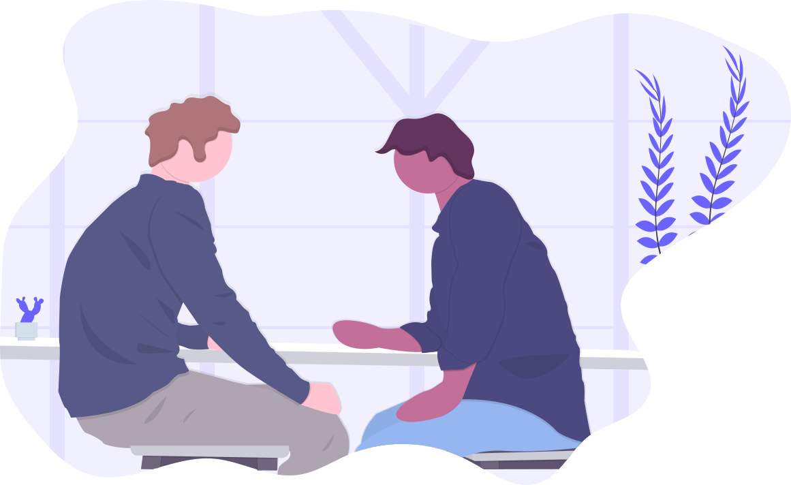

Empty state illustrations (unDraw)
Source: unDraw via MIT mirror. Files live in assets/images/empty_states/.
empty-feed.svgwall_post — Nexus / no posts

empty-chat.svgconversation — Chat / DMs
empty-worlds.svgonline_world — Explore / worlds
empty-notifications.svginbox_cleanup — Alerts